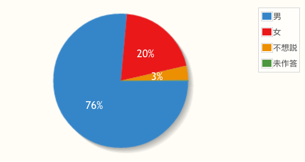

2012/12/19
活動報名統計
由目前報名系統的資料中，我們發現一些大家可能會感興趣的統計資料：您覺得您目前的職稱或工作內容最接近以下哪一種?

由"其它"選項高達 17% 可以推知其實這個項目的統計分類並不是夠詳盡(而且只能單選)，但仍可大略看出工程師(包括前端、後端、系統等)佔了近 60% 的比例，而設計師(包括美術、UI/UX設計)則佔了約 20% 左右的比例，這也是我們當初希望達成的目標；除了技術人員之外，也有約 7% 的比例是管理階層人員。
您是否第一次到中研院參加研討會?

這次有超過一半以上的朋友是第一次到中研院參加活動，這也表示我們到時候的會眾引導工作需要更花心思了。
性別
也許因為我們有特別為設計師保留一定數量的席次，所以有較高的女性參加比例是可以預期的。對於一向陽剛氣較重的技術研討會來說，有 20% 的女性與會者應該是個不錯的消息，也希望可以帶來不同的氣氛。
謝謝大家的支持，屆時請務必到現場參與我們為您籌備的盛會。